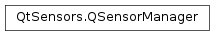

QSensorManager¶
Synopsis¶
Static functions¶
- def
createBackend(sensor) - def
isBackendRegistered(type, identifier) - def
registerBackend(type, identifier, factory) - def
setDefaultBackend(type, identifier) - def
unregisterBackend(type, identifier)
Detailed Description¶
The
PySide2.QtSensors.QSensorManagerclass handles registration and creation of sensor backends.Sensor plugins register backends using the
PySide2.QtSensors.QSensorManager.registerBackend()function.When
QSensor.connectToBackend()is called, thePySide2.QtSensors.QSensorManager.createBackend()function will be called.
-
class
PySide2.QtSensors.QSensorManager¶
-
static
PySide2.QtSensors.QSensorManager.createBackend(sensor)¶ Parameters: sensor – PySide2.QtSensors.QSensorReturn type: PySide2.QtSensors.QSensorBackendCreate a backend for
sensor. Returns null if no suitable backend exists.
-
static
PySide2.QtSensors.QSensorManager.isBackendRegistered(type, identifier)¶ Parameters: - type –
PySide2.QtCore.QByteArray - identifier –
PySide2.QtCore.QByteArray
Return type: PySide2.QtCore.boolReturns true if the backend identified by
typeandidentifieris registered.This is a convenience method that helps out plugins doing dynamic registration.
- type –
-
static
PySide2.QtSensors.QSensorManager.registerBackend(type, identifier, factory)¶ Parameters: - type –
PySide2.QtCore.QByteArray - identifier –
PySide2.QtCore.QByteArray - factory –
PySide2.QtSensors.QSensorBackendFactory
Register a sensor for
type. Theidentifiermust be unique.The
factorywill be asked to create instances of the backend.- type –
-
static
PySide2.QtSensors.QSensorManager.setDefaultBackend(type, identifier)¶ Parameters: - type –
PySide2.QtCore.QByteArray - identifier –
PySide2.QtCore.QByteArray
Sets or overwrite the sensor
typewith the backendidentifier.- type –
-
static
PySide2.QtSensors.QSensorManager.unregisterBackend(type, identifier)¶ Parameters: - type –
PySide2.QtCore.QByteArray - identifier –
PySide2.QtCore.QByteArray
Unregister the backend for
typewithidentifier.Note that this only prevents new instance of the backend from being created. It does not invalidate the existing instances of the backend. The backend code should handle the disappearance of the underlying hardware itself.
- type –
© 2018 The Qt Company Ltd. Documentation contributions included herein are the copyrights of their respective owners. The documentation provided herein is licensed under the terms of the GNU Free Documentation License version 1.3 as published by the Free Software Foundation. Qt and respective logos are trademarks of The Qt Company Ltd. in Finland and/or other countries worldwide. All other trademarks are property of their respective owners.